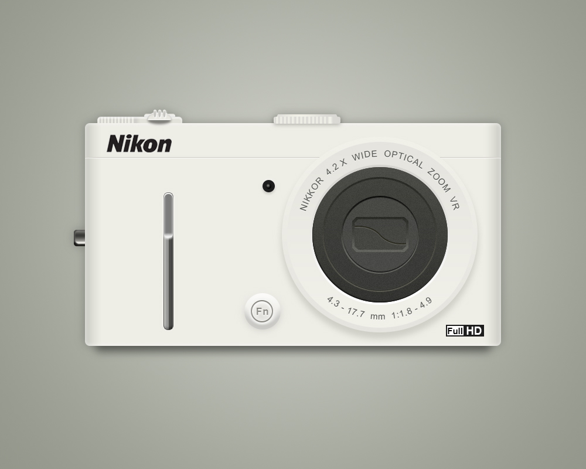

#001 - 11/07/2017 - Time: 2 hours
Material Rendering and lighting study in Photoshop. (Reference used)

#002 - 11/08/2017 - Time: 2.5 hours
Material Rendering and lighting study in Photoshop. (Reference used)
#003 - 11/13/2017 - Time: 2.5 hours
Texture and lighting study. Dribbble icon design in Photoshop. (Reference used)